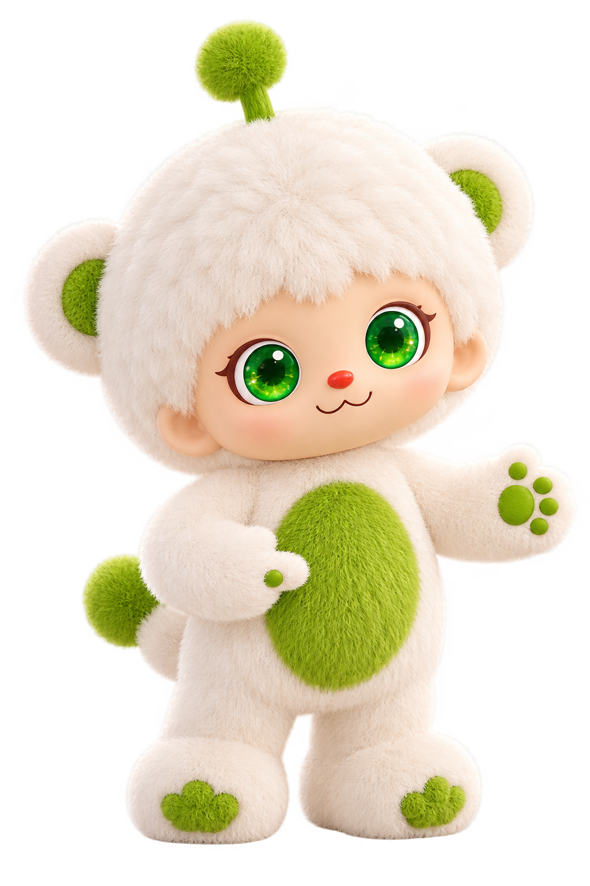

看一看 · 聊一聊 · 做一做

角色与交互为方案示意01 / 为什么这样做家长需要具体做法，
家长需要具体做法，
孩子需要愿意参与的理由。
玩偶有时接不住孩子的话，单靠自由聊天难以持续吸引孩子。
小程序已有目标和提醒功能，家长仍要自己想做什么、怎样安排。
方案从刷牙这样的具体活动切入，给家长现成的计划，也给孩子主动参与的入口。“我更需要的是你给我出一个解决方案，我应该怎么做？”
02 / 完整过程从看动画，到真正刷牙，
从看动画，到真正刷牙，
再到家长记录完成。
先看一次家庭活动怎样发生，再往下体验每个环节。
- 1一起看刷牙动画
知道今天要练习什么
- 2结束后出现任务
对应刷牙主题的模板
- 3家长确认计划
直接添加，或调整时间
- 4玩偶按时提醒
邀请孩子准备刷牙
- 5孩子实际刷牙
在家长陪伴下练习
- 6家长检查并记录
小程序显示今日完成
- 7按计划继续提醒
一次完成不结束目标
孩子的独立支路 · NFC 规划
看看怎么触卡 ↓拿刷牙主题卡 → 碰小乐肚子 → 开启刷牙对谈
通常在看完动画后玩，也可以随时发起；家长可以一起参与，不需要先添加任务。
03 / 家长怎么用看完动画，
看完动画，
直接添加刷牙任务。
默认计划可以一键确认。想换时间或日期，再进入设置。
任务设置与推荐弹层为设计重构；演示设备已绑定。刷牙动画视频位置已预留，当前不播放录屏。
04 / 孩子互动与家长查看孩子碰卡后开启对谈，
孩子碰卡后开启对谈，
家长在手机上看记录。
每张卡对应一集动画。从该集预设的 10 个启发问题中选一个，开启同主题对谈。
点击卡片，模拟碰一碰肚子
刷牙主题卡 · 背面碰一碰，聊一聊
- 准备好这张主题卡
- 轻碰小乐的绿色肚子
- 听听小乐想问什么
家长视角 · 刷牙主题对话示例
聊天记录
刷牙主题 · 对话示例
卡片触发的提问，会出现在家长查看的聊天记录中。
示例题库与回复为本次重构，不是真实儿童聊天记录。启发式提问帮助孩子说出对刷牙的想法；家长能据此了解孩子。刷没刷牙，仍需家长实际检查。
查看 10 个示例问题
05 / 回到现实中的练习
聊过刷牙，不等于已经刷牙。
玩偶提醒之后，孩子实际去做；家长检查后，再记录今日完成。
孩子实际刷牙
家长陪伴，观察行为
家长记录今日完成
不靠一句“我刷完了”自动判断
保留后续提醒
明天继续按计划练习
方案材料
研究原文保留在附件，补写文档标明重构。
研究与素材说明
蛋蛋妈妈访谈用于理解家长对可执行建议的偏好，访谈主要讨论较大年龄孩子，家庭另有 6 岁儿童。目标设置困难、对话表现等其他信息来自项目回忆。NFC 按规划呈现；角色动作、任务界面、卡片与对话内容为本次重构示意。